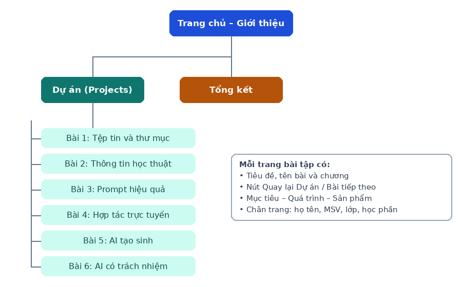

Giới thiệu – About Me
Xin chào, mình là Nguyễn Hưng Nam
Sinh viên ngành Sư phạm Âm nhạc, Trường Đại học Sư phạm Nghệ thuật Trung ương. Đây là Portfolio lưu giữ các sản phẩm học tập của học phần Nhập môn Công nghệ số và ứng dụng trí tuệ nhân tạo.
Thông tin cá nhân
- Họ và tên
- Nguyễn Hưng Nam
- Ngành học
- Sư phạm Âm nhạc
- Lớp
- K20A SPAN
- Sở thích
- Nghe nhạc, xem phim, chơi nhạc cụ, ca hát
Mục tiêu học tập và định hướng phát triển
- Nắm vững kiến thức nền tảng về công nghệ số: quản lý tệp, khai thác thông tin, trí tuệ nhân tạo, hợp tác trực tuyến, sáng tạo nội dung số và liêm chính học thuật.
- Sử dụng công nghệ và AI một cách có trách nhiệm để phục vụ học tập và sáng tạo trong lĩnh vực Sư phạm Âm nhạc.
- Định hướng sau khi tốt nghiệp: trở thành giáo viên âm nhạc, kèm kế hoạch phát triển kỹ năng số trong 1–2 năm tới: học sử dụng phần mềm soạn nhạc và thu âm, biết làm video bài giảng, và dùng AI có trách nhiệm để hỗ trợ soạn giáo án.
Mục tiêu của Portfolio này
- Thể hiện các kỹ năng số đã học qua 6 bài tập của học phần.
- Lưu trữ sản phẩm học tập tại một nơi để dễ truy cập và chia sẻ với giảng viên, bạn học và nhà tuyển dụng sau này.
- Rèn thói quen ghi nhận quá trình học, tự đánh giá và khai báo minh bạch việc sử dụng AI.
Cấu trúc Portfolio
